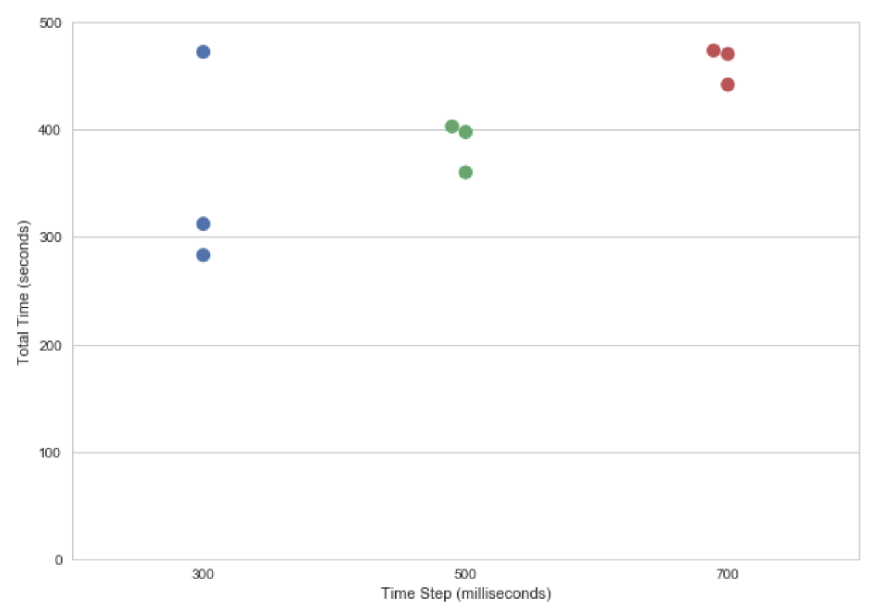
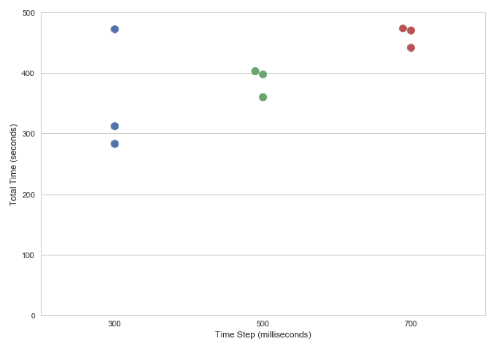

Select a switch mode (one button or three buttons).
Instructions: A timer will cycle through the buttons. Use the spacebar to select the highlighted key.
Instructions: Use the "N" key to move to the right. Use the "M" button to move down. Select the highlighted key with the spacebar.
Test Methods
I tested three different time settings for the single-button switch mode (300 milliseconds, 500 milliseconds, 700 milliseconds). For each test, the task consisted of 8 equations (4 simple: 2 numbers (up to 2 digits) and 1 operator; 4 complex: 3 numbers (up to 3 digits) and 2 operators). I ran each test 3 times.
I used a Python script to generate random equations for each test to mitigate for the results of having easier/harder number combinations (for example, 82 / 6 is easier to type than 77 - 7). You can see my scripts in a Jupyter notebook here.
Here's the test data I collected:
Include information here about your app.
Time taken to complete the task, by time interval

You can see that, as you would expect, the longer the interval, the longer it takes to complete all 8 equations. The relationship also looks somewhat linear.
Number errors in each task, by time interval
Here, you can see that there's not a big difference in the errors produced with the 500 millisecond condition versus the 700 millisecond condition. I think this is because we're approaching the error floor (that is, it's relatively error free, or the errors are incidental/not a result of the time interval).
Because 500 and 700 milliseconds had roughly the same error rate, at yet 500 milliseconds was faster to complete, I ended up going with the 500 millisecond setting for my final product.
Some other interesting things I noticed:
We'd need to collect more data to confirm, but I think there might be a linear relationship between the time interval and the time to complete task, and an exponential relationship between the time interval and the number of errors.
Some keys are super hard to select! For example, anything at the beginning of a row (7, 4, 1, 0) is challenging, because your eyes can't track the movement as well when it jumps from one row to the next. And the hardest one of all is 7. One way to mitigate this might be to have a variable time interval that is longer for the keys at the beginning of a row.
I tried this out with an even shorter time interval, 250 milliseconds, but that was nearly impossible for me. So instead I slowed it down to 300 milliseconds.
This experiment had super strong learning effects and fatique. I don't know if they ended up cancelling each other out. I definitely found myself getting tired and losing focus. Also, not only was it a challenge to hit the spacebar at the correct time, I also had to manage my attention and when I glanced over at the equations as opposed to looking at the keypad. This wasn't trivial!
There were times when I got into a "flow" and felt like I was really good at it (like the outlier experiment on the 300 millisecond setting where I did all of the equations in just 283 seconds!). But there were also times where I had a string of repeated errors. Training is key.
Some key combinations were particularly onerous, like hitting "=" and then hitting "C". Because of where the keys are oriented, this means you have to wait through a full cycle of the keyboard. Because "=" and then "C" is such a frequent combo, I'd consider switching their order. However, keys that are directly adjacent to each other are also particularly difficult to select in quick succession. So the ideal configuratio would actually be "=" then two other keys then
"C".
If I had more time
I tried implementing a radio button to set the time interval speed on single switch mode, but couldn't quite get that to work. Another solution might be to have a time interval slider. Being able to control the time interval would be key to implementing this system in the real world. Sometimes you favor accuracy (which means you would want a longer time interval), other times you might want speed.
Note: I hid the user test info while using the calculator because for some reason it "jumps" to the bottom of the page when you select a key with the spacebar. That didn't happen when I didn't have the other content at the bottom of the page. I used this example from W3Schools to help with the implementation of this feature.
Instructions
Select a switch mode (one button or three buttons).
Test Methods
I tested three different time settings for the single-button switch mode (300 milliseconds, 500 milliseconds, 700 milliseconds). For each test, the task consisted of 8 equations (4 simple: 2 numbers (up to 2 digits) and 1 operator; 4 complex: 3 numbers (up to 3 digits) and 2 operators). I ran each test 3 times.
I used a Python script to generate random equations for each test to mitigate for the results of having easier/harder number combinations (for example, 82 / 6 is easier to type than 77 - 7). You can see my scripts in a Jupyter notebook here.
Here's the test data I collected:
Include information here about your app.
Time taken to complete the task, by time interval
You can see that, as you would expect, the longer the interval, the longer it takes to complete all 8 equations. The relationship also looks somewhat linear.
Number errors in each task, by time interval
Here, you can see that there's not a big difference in the errors produced with the 500 millisecond condition versus the 700 millisecond condition. I think this is because we're approaching the error floor (that is, it's relatively error free, or the errors are incidental/not a result of the time interval).
Because 500 and 700 milliseconds had roughly the same error rate, at yet 500 milliseconds was faster to complete, I ended up going with the 500 millisecond setting for my final product.
Some other interesting things I noticed:
If I had more time
I tried implementing a radio button to set the time interval speed on single switch mode, but couldn't quite get that to work. Another solution might be to have a time interval slider. Being able to control the time interval would be key to implementing this system in the real world. Sometimes you favor accuracy (which means you would want a longer time interval), other times you might want speed.
Note: I hid the user test info while using the calculator because for some reason it "jumps" to the bottom of the page when you select a key with the spacebar. That didn't happen when I didn't have the other content at the bottom of the page. I used this example from W3Schools to help with the implementation of this feature.